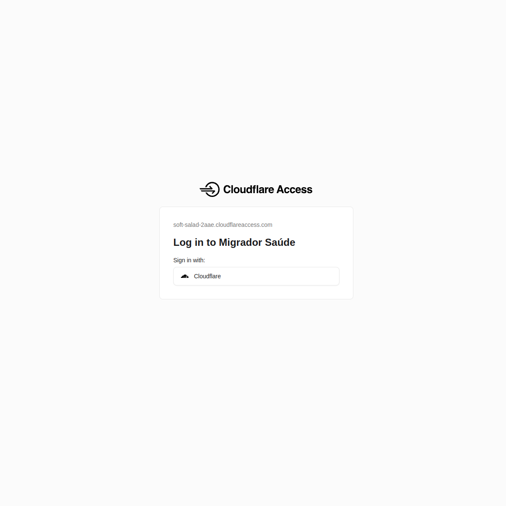

Estudo de caso · Migração de dados de saúde
Rastreabilidade em uma migração de dados de saúde.
A apresentação usa a tela real pública de autenticação do ambiente de produção e documenta a arquitetura e as decisões do projeto. O simulador técnico é independente e trabalha somente com registros fictícios.
Tela original de autenticação
Capturada antes do login, na barreira do Cloudflare Access. Nenhuma sessão foi iniciada.

A captura contém apenas a tela de autenticação pública. As páginas internas não são mostradas porque contêm dados reais de saúde.
Demonstração técnica independente
O repositório inclui um simulador offline para explorar validação, estados por registro, ledger, conciliação e bloqueios de escrita. Essa interface demonstrativa não é uma reprodução visual da aplicação de produção.